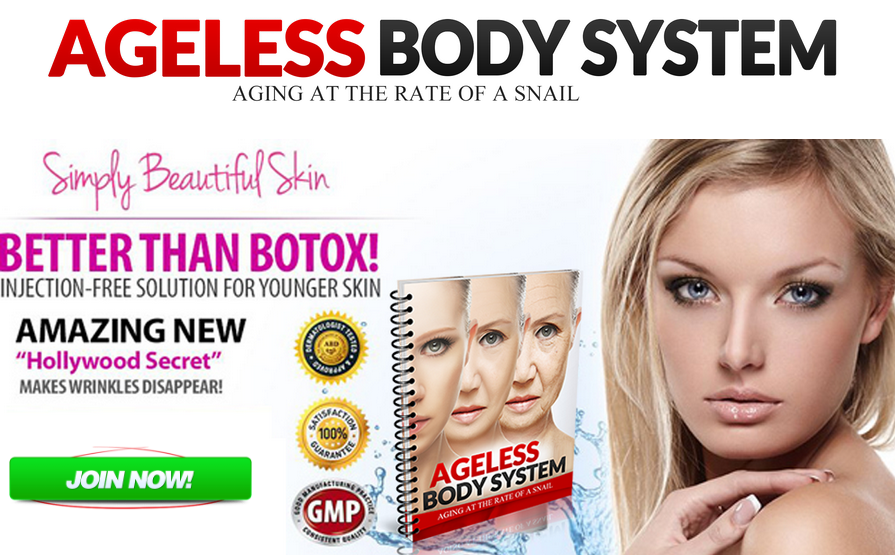
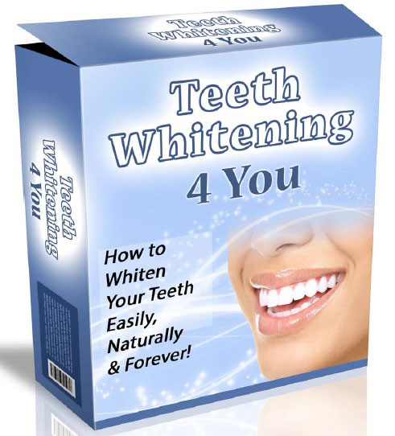

Skin Whitening Forever - How To Whiten Your Skin Naturally

What is Skin Whitening Forever?
Best Foundation For Oily SkinWho would say no to a flawless white skin? The present trend of cosmetic industry is to offer skin whitening products that can whiten your skin complexion. These creams and lotions are very costly and do not offer satisfactory results.
However, there are creams that do offer satisfaction, but it is only for temporary period. And, they contain harmful compounds that may risk your skin for side effects that are as danger as skin cancer. Many countries banned the usage of such compounds from ingredients list.
If a product proves to be offering skin whitening results with no side effects, then the prices touch the sky. Skin whitening Forever is one of the best solutions for achieving fair complexion within affordable prices. The product guarantees to offer you permanent result.
If you use the product, your skin will turn white and glow flawlessly, without any blemishes or scars. The change of complexion is very natural, and you will have no side effects.
Already Decided?
That's great! Click the button on your right and take the action now.
What is the Author saying?
Eden Diaz, the author of Skin Whitening Forever, is the Researcher and Alternative Medical Practitioner of AHHA (American Holistic Health Association).She is naturally, a Jamaican woman of colour. She was born with a dark brown skin, and spent all her young life with humiliation from white skin.
Though she was born to a white skinned mother, her genes took the physical characteristics of her father. However, her younger sister, born to her mother, took the physical characteristics of her mother. Therefore, Eden Diaz underwent severe embarrassment every now and then, and lost her self-confidence, resulting in severe depression.
She then came to know about skin whitening products that go deep inside the pores and work to give fair skin. In that hunt, she got to use many products, that initially gave her results, but later the situation was worsened. The skin slowly changed to light shade, but the skin started becoming dry and scaly, with dark patches.
She found herself to be the ugliest creature in the world. But she did not give up and still continued the hunt. This is the time she came to know about Skin Whitening Forever, that made her day with a few pennies!She found that the results were amazing. Now she enjoys a blemish free, flawless white skin!
How It Works?
The product comes in a PDF format to your personal email link. The package includes practical solutions and beauty treatments, that are shown visually. All the recipes are natural and homemade with simple and easy ingredients, that you can get from any kind of place you live.
These recipes work to go deep into your skin and fade off all the marks left behind by skin imperfections. The recipes go deep into the skin pores, stimulate blood circulation and work directly on melanin, a pigment that determines the skin colour.
After applying the recipe, the production of melanin inside the skin is reduced evenly, to give a fair, even skin tone. Apart from skin whitening, other skin imperfections are also cured simultaneously. The imperfections are freckles, age spots, acne marks, pigmentation, melisma and dark underarms.
Benefits
The results are 100% guaranteed or else you can get back your money if you do not find results within 60 days.
-
Apart from complete skin whitening, the product fades of marks left by skin disorders like:
Age spots
Freckles
Acne marks
Melisma
Pigmentation
Dark Underarmsol
The program comes with a link that directs you to practical visuals for many simple homemade beauty treatments that improve your skin complexion.
The product comes in a digital format (PDF) that lets you know the secrets to achieve skin whitening in few minutes.
You need not wait for the product to come your home. Once you order, you can get the PDF that lets you know how to make solutions for achieving white skin forever.
The result gives flawless fair glowing skin, boosting self-confidence from inside.
The price is affordable.
Ingredients mentioned for the recipes are simple and natural.
The product does not show any side effects on the skin.
What are the real users saying?
According to the customer reviews, the product achieved good and satisfactory rating. Customers who used the product are very happy with the results.
It proved to offer solutions for all skin problems as per the promise. Some customers feel that they are now no more aliens but, angels. Many customers feel that the product is worth more than the defined price.
According to them, the recipes are simple and are very easy to follow by looking at the practical visuals. Also, all the ingredients are natural and very easy to find in any place or country. Satisfied customers referred the product to their friends and dear ones.
What Are You Waiting For?
Your Purchase is Backed Up by 30 Days Money Back Guarantee. If You Don't Like The Product, Give It Back And You Will Be Refunded With No Questions Asked!
Final report
As per the customer reviews, package included in the program, and the promises made by the package, the product appears to be amazing. The product helped many people achieve their dreams.
Customers are the real testers for any product. All the real users are highly satisfied with the product performance. Also, there is not wrong in giving a try. As the package comes with a 100% money back guarantee, if you are not satisfied within 60 days, you can get your money back.
So, after buying the program, if you find that the results are not satisfactory, you can get your money back. Therefore, there is no wrong in trying the product, as you will be at no big loss. If the results are satisfactory, what else do you want? Whole world will start admiring you for your flawless skin!

Related Post
Bow Legs No More - Looking for a Permanent Remedy for Bow Legs Without the Need for Surgery?
 Beauty/
Beauty/
Purely Primal Skincare Guide Review - Does It Really Work ?
 Beauty/
Beauty/
Ageless Body System - HOW TO BE INSTANTLY AGELESS?
Recent Post
Teeth Whitening 4 You Review – Get Whiter Teeth Naturally
 Addiction/QUIT SMOKING MAGIC REVIEW
 Addiction/
Addiction/
ALCOHOL FREE FOREVER - HOW TO QUIT DRINKING TODAY FROM THE PRIVACY OF YOUR HOME
 Denatal Health/
Denatal Health/
Dentist Be Damned How To Get Rid Of Toothache Review - Does It Really Work?
 Dental Health/
Dental Health/
Tooth Defender 100% Natural Oral Care Review - Does It Really Work?